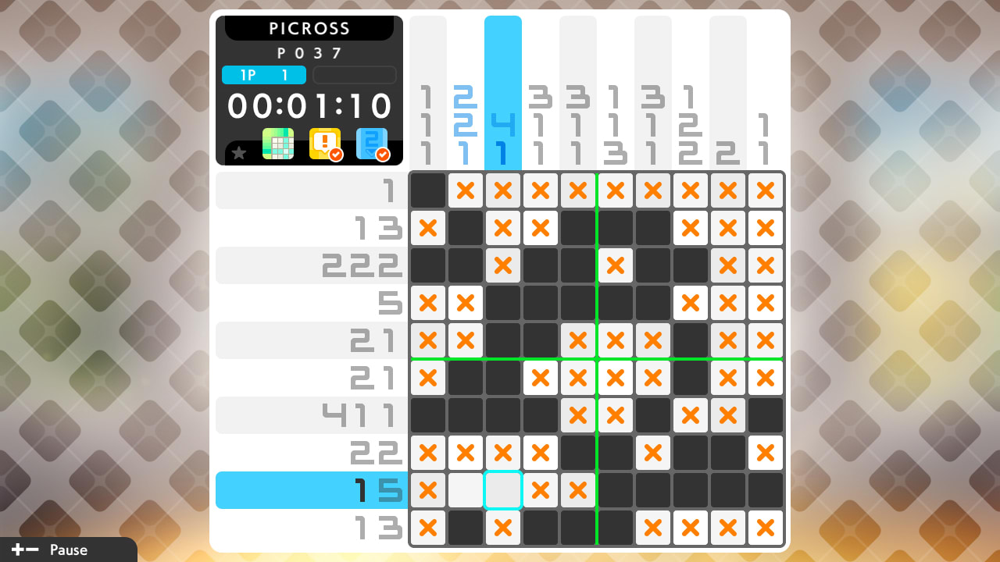
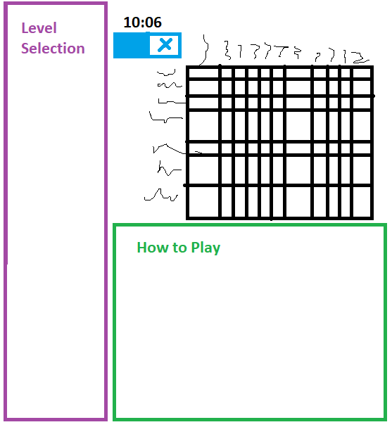
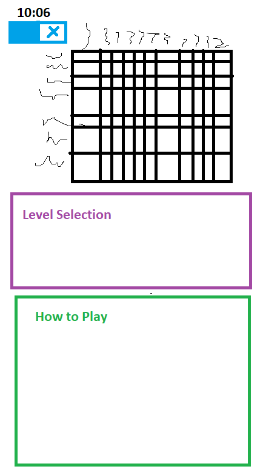

Mixcross Project Proposal
A picross variant where columns can be more than one tile wide!
Genre:
Puzzle
Platform:
Desktop, Mobile
Story
There is none, just a puzzle game.
Aesthetics
The desired style is something similar to the Picross S series of games. They do picross really well, so I want to try doing something similar. Sound-wise, the game will have calm ambient background music and simple interaction sounds.
Gameplay
Picross is a game with a grid and numbers lined up before each row and column. These numbers tell you which squares must be filled in or empty. For each numbers, that many squares must be filled in in a row. Between numbers, there needs to be a gap of at least one square.
For this variant, some of the columns or rows will be more than one square wide. This will mean that players will need to use these columns / rows to figure out how the columns / rows next to them are laid out. This is a little bit similar to Mega Picross, except rather than having single squares mixed in, it's just a double-sized grid for part of the puzzle.
The puzzle will only alert when it's been completed successfully, unless the player chooses to click the check button to get notified of incorrect tiles.
Gameplay will be explained in a tutorial section beneath the game.
On desktop, left click will fill in a tile and right click will mark it with an X. On mobile, however, there will be buttons in the upper-left empty space of the puzzle to swap between placing tiles and X's.
Mockups
Desktop
Mobile
Other
I'm planning on loading the puzzles from .json files, using something like
let file-path = "media/puzzles/sample-puzzle.json";
let puzzle = fetch(file-path)
.then((res) => {
if(!res.ok) {
console.log("Error loading " + file-path)
}
return res.json();
});
This will allow the creation of many different puzzles easily.
Developer Info
I'm Ryan Doyle, a "4th" year GDD Major.
Skills
- Godot
- C#
- C++
- Systems Design
- UX Design
- Pixel Art
Interests
- Tabletop Games
- Puzzle Games